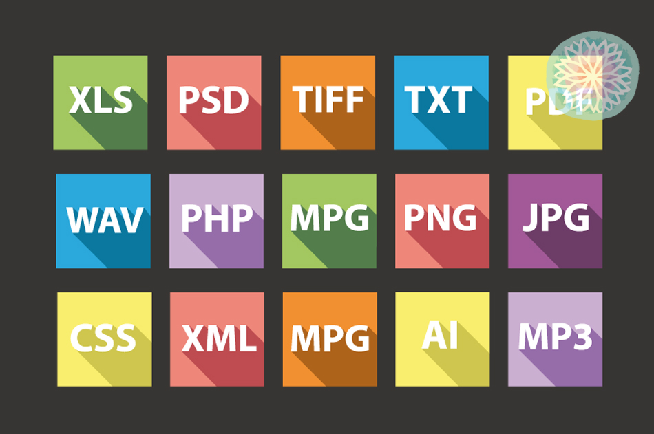

📌Formato de imagen

Es la forma en que se almacena una imagen digital en un archivo. Cada formato define: Cómo se guardan los píxeles. Si se aplica o no compresión. Si permite transparencia, animación o edición.
📌 Tipos principales de formatos de imagen
Son los más comunes porque guardan la imagen píxel por píxel.
JPEG (JPG):
- Usa compresión con pérdida (lossy).
- Muy usado en fotografía digital y web.
- Archivos ligeros pero con pérdida de calidad.
PNG:
- Compresión sin pérdida (lossless).
- Soporta transparencia.
- Ideal para logotipos, gráficos web, íconos.
GIF:
- Solo admite hasta 256 colores.
- Soporta animación simple y transparencia.
- Usado en memes y pequeños gráficos animados.
BMP:
- Formato sin compresión (archivos muy pesados).
- Poco usado hoy, pero conserva máxima fidelidad.
TIFF:
- Alta calidad, usado en fotografía profesional, impresión y escaneo.
- Puede ser con o sin compresión.
📌 Elección del formato depende de:
Uso: impresión, web, animación, diseño. Calidad requerida: máxima fidelidad o ahorro de espacio. Compatibilidad: qué dispositivos o programas lo abrirán.